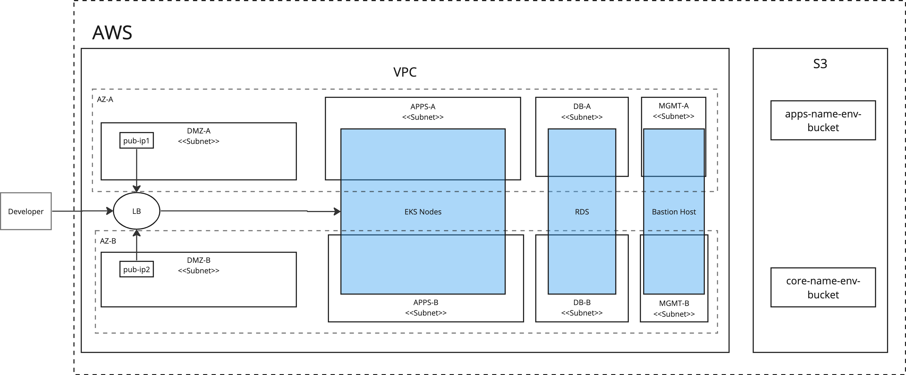

Installation
Prerequisites
Required packages
The following binaries must be present on the machine with access to Kubernetes api before starting:
- kubectl -
v1.27 - helm -
v3.9
Kubernetes
LowOps platform requires a Kubernetes cluster.
Curently supported versions are:
1.27
Resources
To run the platform you'll need at least 16 GB RAM and 8 core CPU.
Platform Foundation
The platform foundation is an infrastructure level that has to provide a scalable, flexeble and extensible enviromnemt for the platform lifecycle. To build the platform foundation, you can use cloud providers or on-premise solutions that allow you to run managed or self-managed Kubernetes (k8s) clusters.
There are 2 different platform foundation_types:
-
generic- Default platform installation method supports any Kubernetes custom or managed solution. All platform components required to run future applications workloads will be installed automatically. -
aws- Optimised platform installation for AWS-specific services natively supports otherAWSservices such as EKS, RDS, S3, ELB, EBS. To use AWS-managed data resources, you need to create them before platform installation as part of the foundation setup. Refer to the diagram bellow for more details.
High level AWS diagram:

Platform Configuration
Before starting the platform installation process, check the configuration options below. Change required paramaters to match your environment setup.
Create values file values.yaml with following parameters:
For more advanced configuration and options descriptions follow this page
lowops:
image:
containerImage: registry.gitlab.com/cinaq/low-ops-platform/ansible-roles:0-ci-v3-2-4
# LowOps platfrom configuration variables
config:
common:
base_domain: ci.cinaq.com
platform_state: present
foundation_type: generic # supported values: generic, aws, azure
email_domain: cinaq.com
general_client_name: CINAQ
platform_version: v3.2.4
low_ops_env: prod # set low-ops-env variable can't be ci,dev,trial - reserved
enable_letsencrypt: "true"
enable_nginx_proxy_protocol: "true" # required when running on generic foundation with haproxy
Refer to the Advanced Configuration page for more details on the available configuration options.
Platform Installation
Configure Namespace
Run script below to create deployment job namespace. Add pull secret to the namespace.
NAMESPACE=lowops-devops
kubectl create namespace "$NAMESPACE"
UPSTREAM_REGISTRY="registry.gitlab.com"
UPSTREAM_REGISTRY_USER="registry-user" # change with your resgitry user
UPSTREAM_REGISTRY_TOKEN="registry-token" # change with your registry password
UPSTREAM_REGISTRY_AUTH=$(echo -n "$UPSTREAM_REGISTRY_USER:$UPSTREAM_REGISTRY_TOKEN" | base64)
mkdir -p /tmp/lowops-docker-config
echo "
{
\"auths\": {
\"$UPSTREAM_REGISTRY\": {\"auth\": \"$UPSTREAM_REGISTRY_AUTH\"}
}
}
" > /tmp/lowops-docker-config/config.json
# ensure lowops-registry secret exists
kubectl -n "$NAMESPACE" create secret generic lowops-registry --from-file=.dockerconfigjson=/tmp/lowops-docker-config/config.json --type=kubernetes.io/dockerconfigjson
Install metallb
Note: This step is not needed for managed k8s solutions.
Add bitnami helm repo
helm repo add "bitnami" "https://charts.bitnami.com/bitnami"
helm repo update
Install metallb chart
# Network pool must be accesseble from cluster.
START_NETWORK=172.20.255.200
END_NETWORK=172.20.255.250
helm upgrade -i -n metallb --create-namespace metallb bitnami/metallb \
--version 3.0.12 \
--set "configInline.address-pools[0].name=default" \
--set "configInline.address-pools[0].protocol=layer2" \
--set "configInline.address-pools[0].addresses[0]=${START_NETWORK}-${END_NETWORK}" \
--set "speaker.secretValue=stronk-key"
Install Platform
From the deploy server with access to the Kubernetes cluster API. Install the platform by installing lowops helm chart.
Add lowops helm repository.
helm repo add --username $UPSTREAM_REGISTRY_USER --password $UPSTREAM_REGISTRY_TOKEN lowops \
"https://gitlab.com/api/v4/projects/41532268/packages/helm/stable"
helm repo update
Run helm install command to start the platform setup process.
NAMESPACE=lowops-devops
CHART_VALUES_FILE=values.yaml
CHART_VERSION=0.1.407
HELM_CMD="helm upgrade -i lowops-platform lowops/lowops -n $NAMESPACE"
if [ -f "$CHART_VALUES_FILE" ]; then
HELM_CMD="$HELM_CMD -f $CHART_VALUES_FILE"
fi
if [ -n "$CHART_VERSION" ]; then
HELM_CMD="$HELM_CMD --version=$CHART_VERSION"
fi
echo "$HELM_CMD"
eval "$HELM_CMD"
After deploy job started you can get installation log
kubectl logs -n lowops-devops --timestamps=true job/lowops-platform -f
After deploy finished successfully start with exploring LowOps platform portal. In browser access https://portal.ci.cinaq.com (where ci.cinaq.com is your base domain.)